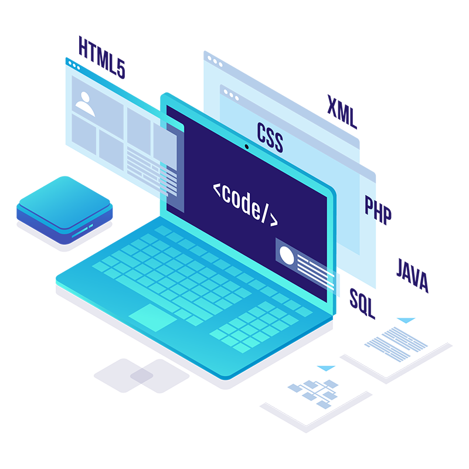

Metodologías De Desarrollo.
¿Qué es una metodología de desarrollo de software?

Las metodologías de desarrollo de software son un conjunto de técnicas y métodos organizativos que se aplican para diseñar soluciones de software informático.
Metodologías de desarrollo de proyectos tradicionales v/s ágiles.
Presentación en slidershare de Metodologías tradicionales v/s ágiles.
Etapas de desarrollo de un proyecto.
Presentación en slidershare de Etapas de desarrollo de un proyecto.
Roles y responsabilidades en un proyecto.
Presentación en slidershare de Roles y responsabilidades en un proyecto.
Desarrollo de un proyecto RESUMEN.
Presentación en slidershare - resumen de desarrollo de un proyecto.